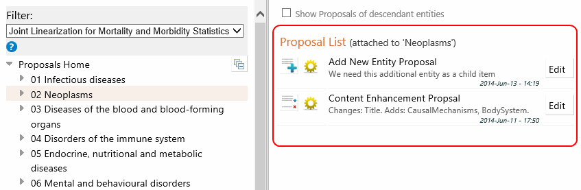
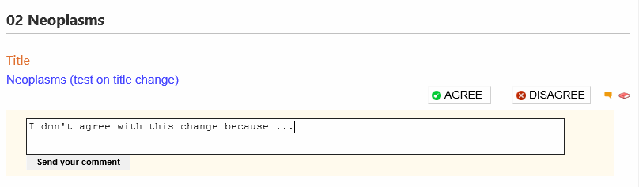

When you are in Proposals page, you may browse the ICD hierarchy using a familiar interface. To go to the entity that you are interested you could use the Searching and Advanced Search functions as well
You may filter the hierarchy by choosing a linearization from the dropdown list. For example, if you choose "Mortality and Morbidity..." only ICD entities in that linearization will be shown
If Foundation is chosen no filter is applied.
When a filter is used, the search functionality will also only look for entities in the filtered content
The system saves the proposals in the same place regardless of the filter chosen. I.e. You will see the same proposals when you browse the same entity no matter which filter you use.
Clicking on a proposal will open a page that shows the details of the proposal
Once you are on a particular entity, our system will show you the proposals attached to that entity.

If you'd like to see all proposals attached to the item and its decendants then you could use the checkbox above that says "Show proposals of descendant entities" .
Clicking on the Proposal will open it in "read mode". If you are the author of the proposal you could click the "Edit" button and open the proposal in "editing mode" as well.
If you open a proposal in view mode, you have the option of Agreeing/Disagreeing parts of the proposal by clicking the relevant button. It is also possible to write a comment on the proposal using the comment button. If the button looks like then it means there are already comments in there

It is generally better to help improving an existing proposal rather than writing your own proposal in case a similar proposal already exists.